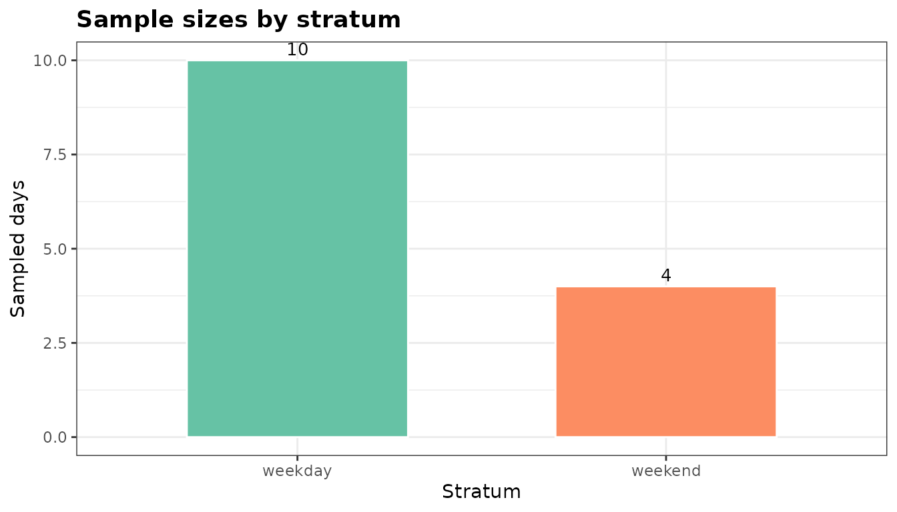
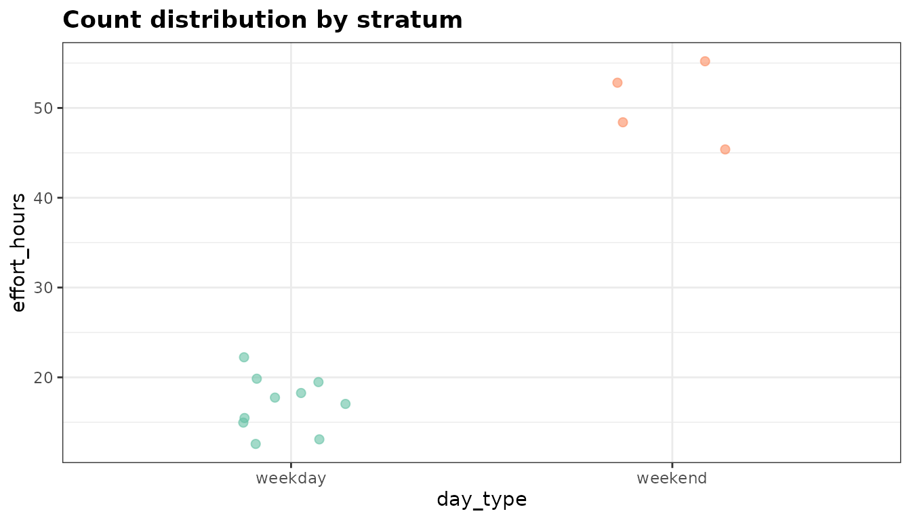
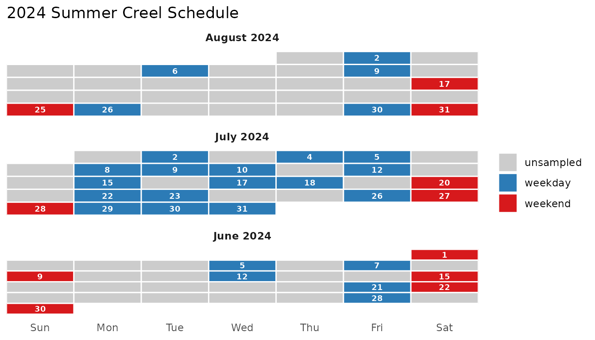
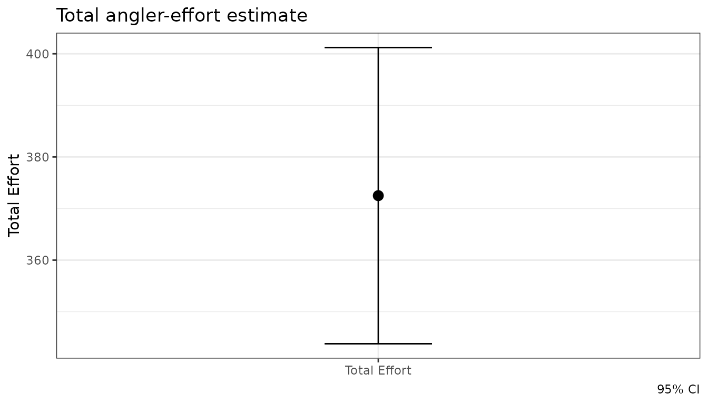
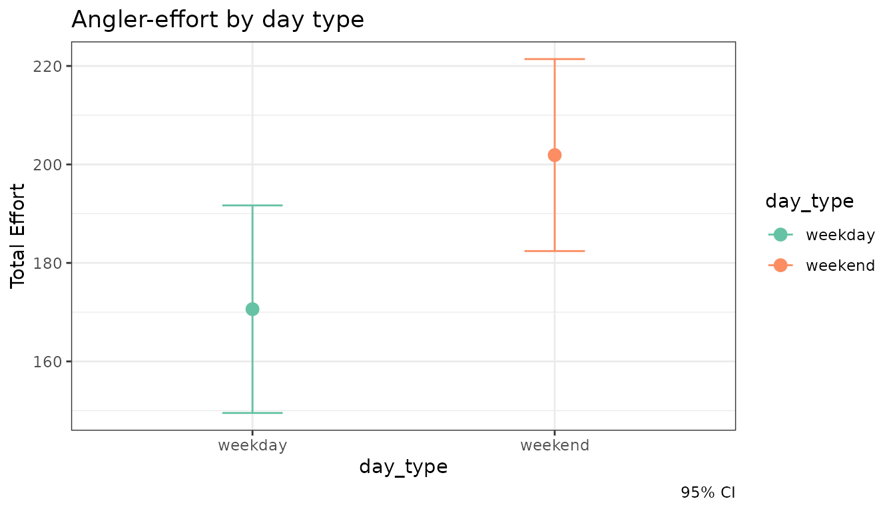
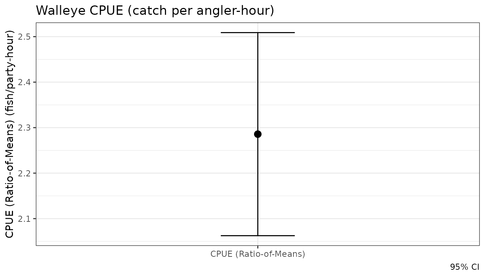

tidycreel ships three ggplot2-based plotting functions that cover the main inspection points in a creel survey workflow:
| Function | When to use |
|---|---|
plot_design() |
Inspect stratum sample sizes and count distributions |
autoplot(schedule) |
Review the survey calendar tile-by-tile |
autoplot(estimates) |
Visualise effort or CPUE estimates with CIs |
1 Inspect the design with plot_design()
Before attaching counts
Once you have built a creel_design object from a
calendar, plot_design() shows the number of sampled days
per stratum.
# Build a design from the bundled example calendar
data("example_counts")
cal <- unique(example_counts[, c("date", "day_type")])
design <- creel_design(cal, date = date, strata = day_type)
plot_design(design, title = "Sample sizes by stratum")
The bar chart makes it immediately clear whether weekday and weekend strata are balanced. A tall weekday bar with a short weekend bar signals that estimates for the weekend stratum will carry higher uncertainty.
After attaching counts
Once counts are attached, plot_design() switches to a
jitter + crossbar display showing the raw count distribution per
stratum.
design <- add_counts(design, example_counts)
plot_design(design, title = "Count distribution by stratum")
The crossbar shows the mean with a 95 % normal CI across sampled days. Large within-stratum spread (many jittered points far from the crossbar) suggests high day-to-day variability and the need for more sampling days.
2 Review the survey calendar with autoplot()
autoplot.creel_schedule() renders a monthly tile
calendar from a creel_schedule object — the same object
produced by generate_schedule().
# Generate a three-month schedule sampling 40 % of days
schedule <- generate_schedule(
start_date = "2024-06-01",
end_date = "2024-08-31",
n_periods = 2,
sampling_rate = 0.4,
seed = 42
)
autoplot(schedule, title = "2024 Summer Creel Schedule")
Blue tiles are sampled weekdays; red tiles are sampled weekends; grey tiles are unsampled days. Month panels stack vertically so the full season is visible at a glance.
3 Visualise estimates with autoplot()
autoplot.creel_estimates() draws a point-and-errorbar
plot from any creel_estimates object.
Ungrouped effort estimate
data("example_interviews")
design <- add_interviews(
design,
example_interviews,
catch = catch_total,
effort = hours_fished,
trip_status = trip_status
)
#> ℹ No `n_anglers` provided — assuming 1 angler per interview.
#> ℹ Pass `n_anglers = <column>` to use actual party sizes for angler-hour
#> normalization.
#> ℹ Added 22 interviews: 17 complete (77%), 5 incomplete (23%)
effort <- estimate_effort(design)
autoplot(effort, title = "Total angler-effort estimate")
Grouped effort estimate
Passing by = day_type estimates effort separately for
each stratum. The resulting plot maps the grouping variable to both the
x-axis and point colour.
effort_by_type <- estimate_effort(design, by = day_type)
autoplot(effort_by_type, title = "Angler-effort by day type")
Weekend effort is substantially higher than weekday effort — a typical pattern in summer recreational fisheries.
CPUE estimate
cpue <- estimate_catch_rate(design)
#> ℹ Using complete trips for CPUE estimation
#> (n=17, 77.3% of 22 interviews) [default]
autoplot(cpue, title = "Walleye CPUE (catch per angler-hour)")
Combining plots
All three functions return standard ggplot objects, so
they compose naturally with + (ggplot2 operators) or
side-by-side using patchwork if that
package is installed.
# Requires patchwork
library(patchwork)
plot_design(design) + autoplot(effort)Summary
| Function | Input class | Returns |
|---|---|---|
plot_design(design) |
creel_design |
bar chart (no counts) or jitter+crossbar (counts) |
autoplot(schedule) |
creel_schedule |
monthly tile calendar |
autoplot(estimates) |
creel_estimates |
point-and-errorbar plot |
All plots accept a title = argument and return a
ggplot object for further customisation with standard
ggplot2 + syntax.